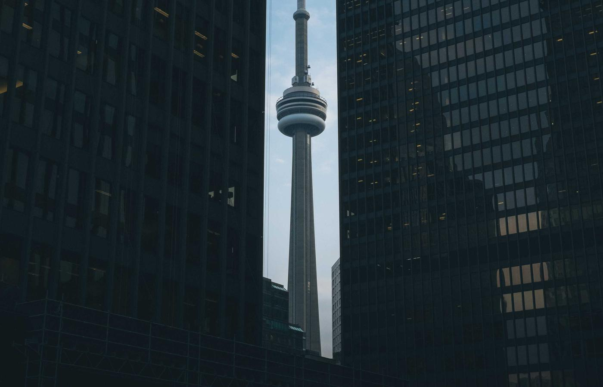
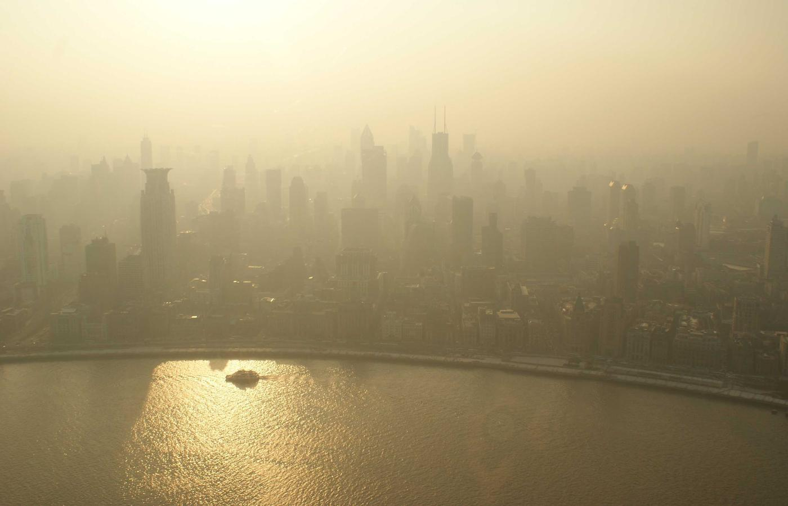
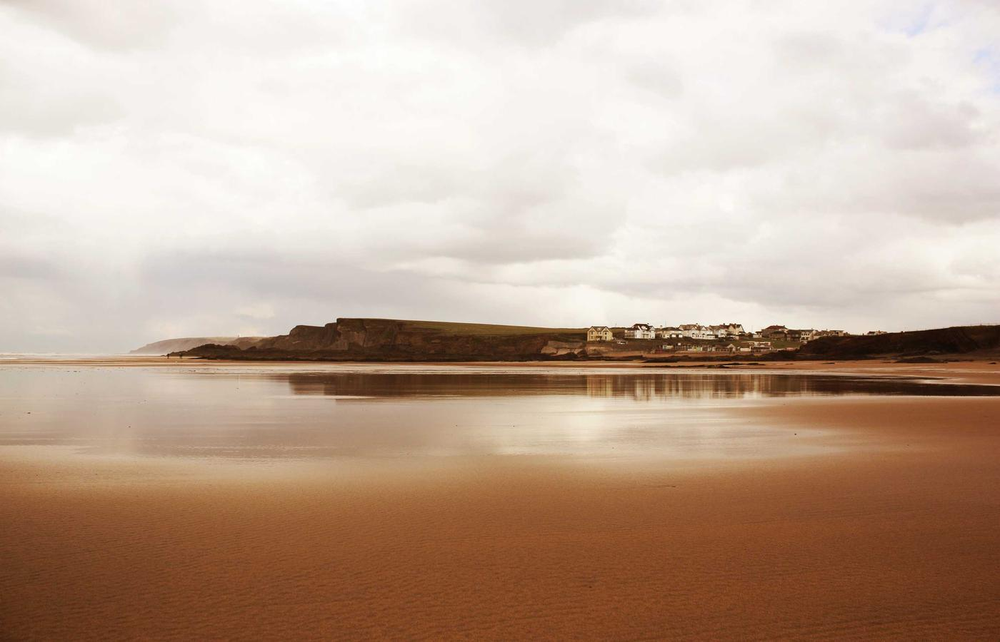

Сильная история
Следы Византии и Османской империи сохранились в архитектуре и музеях.
Стамбул — крупнейший город Турции и уникальная точка пересечения Европы и Азии. На одной территории сочетаются античное наследие, османская архитектура, современный темп мегаполиса и яркая гастрономическая культура.
Город подойдёт как для первого знакомства с Турцией, так и для повторных поездок: каждый район здесь раскрывается по‑новому и имеет собственный характер.

Следы Византии и Османской империи сохранились в архитектуре и музеях.

Босфор, холмы и смотровые площадки делают город очень фотогеничным.

Базары, чайные, кварталы ремесленников и уличная жизнь создают атмосферу Востока.